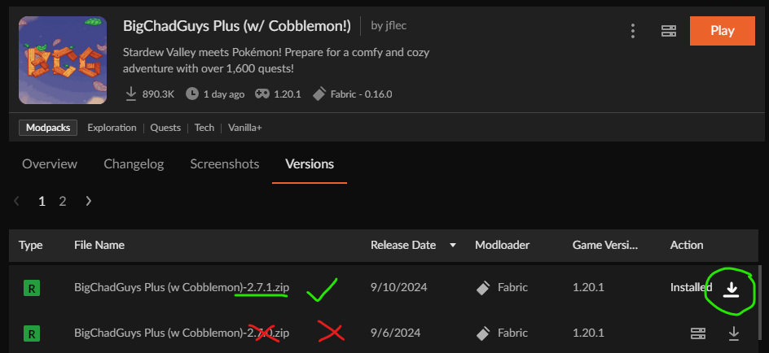
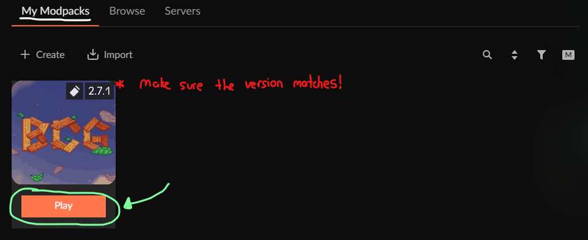

Modpack Setup
Modpack Name:
BigChadGuys Plus (w/ Cobblemon!)
Modpack Version:
2.5.1
Minecraft Version:
1.20.1
Server IP:
10.0.0.173
Download the standalone CurseForge App from the
CurseForge Install Page
Select / Setup your Minecraft location on the App
Browse for the
BigChadGuys Plus (w/ Cobblemon!)
Modpack and click 'Install'

Click the settings cogwheel on the bottom left of your CurseForge launcher and select Minecraft under Game Specific settings
Scroll down to Java Settings and slide the default allocated memory bar to at least 6144 or 8192 (recommended)
Navigate back to My Modpacks, hover the modpack profile, and click Play
